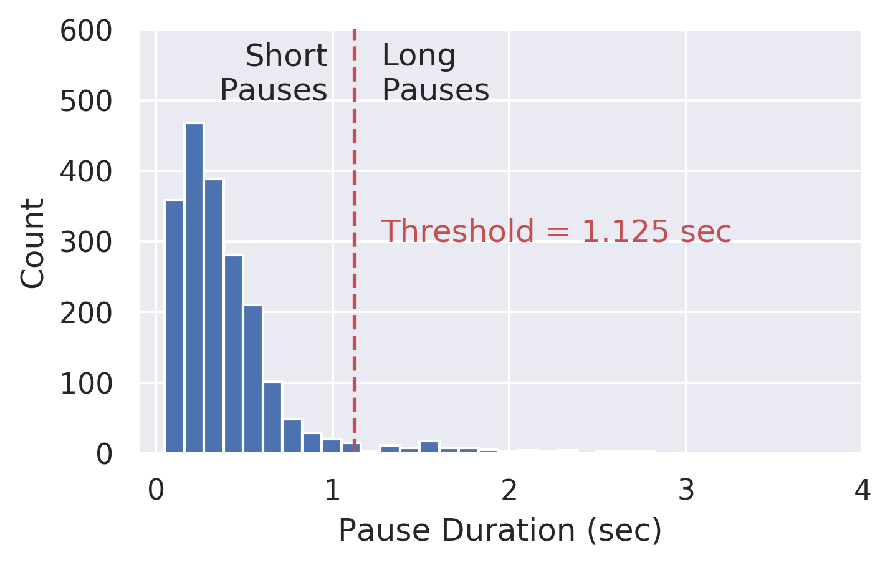
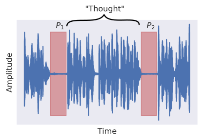

This app uses the Web Audio API to capture sound from the user’s microphone. Subsequently, this audio is streamed to the Google Speech API — using Python, Flask, and SocketIO on the backend — where the user’s spoken word is transcribed to text.
Once the user has finished speaking, the most commonly used words are displayed in an interactive transcript. As certain words appear more often in the English language (such as “the”, “a”, and “in”), these words will likely represent a majority of the displayed words. While these words — referred to as STOP words — often do not impart significant meaning onto the semantics of the sentence, they can still be useful indicators of overused words during a spoken presentation, and are thus presented to the user. The most common non-STOP words are also displayed to give the user a sense of (possibly) overused words that do impart meaning onto a sentence.
The user can also examine his/her average speaking speed over time and determine where within the transcript the speed changed. This should allow the user to identify regions of the talk that were difficult to articulate and focus their efforts on preparing this region of the presentation.
In order to determine the topics that a user covered during his/her talk, the talk was first split into thoughts. Each thought was defined as a period of speech which was surrounded by pauses longer than ~1 second in length. The specific pause length was determined using KMeans clustering to parse all pauses within the speech into two groups — short and long — and chunks of speech surrounded by long pauses were labeled as independent thoughts (see below).


Subsequently, the text from each thought was used as an independent document in a Latent Dirichlet Allocation (LDA) analysis.
In an LDA analysis, each document is labeled with a mixture of topics that have been identified using a probablistic model. The probablistic model is generated by determining words that are most likely to be found within a given topic, and resulting topics are often skewed towards specific words, such that each topic may be defined by a limited number of words.
Using the topic mixtures for each document (remember that each document is a user’s thought), we identify the topic that contributes the most to that thought. We can use this information to calculate the fraction of time that the user spent in each topic during the speech, and display this information.
Currently this app is focused on giving users feedback on their most commonly used words, speaking pace, and the duration and types of topics mentioned during their speech. Here's some of the other features that are currently being implemented: